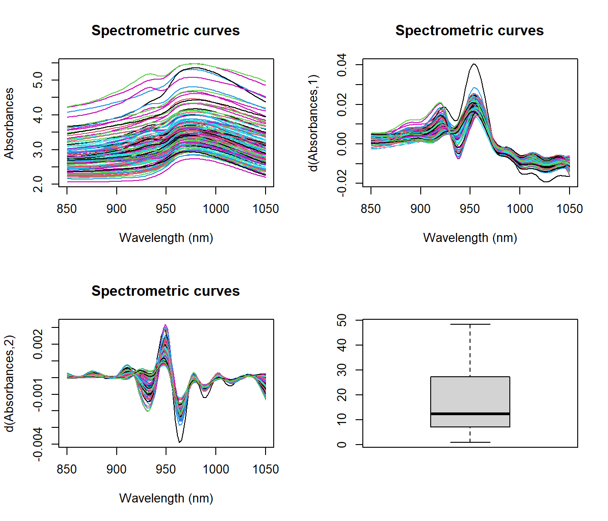
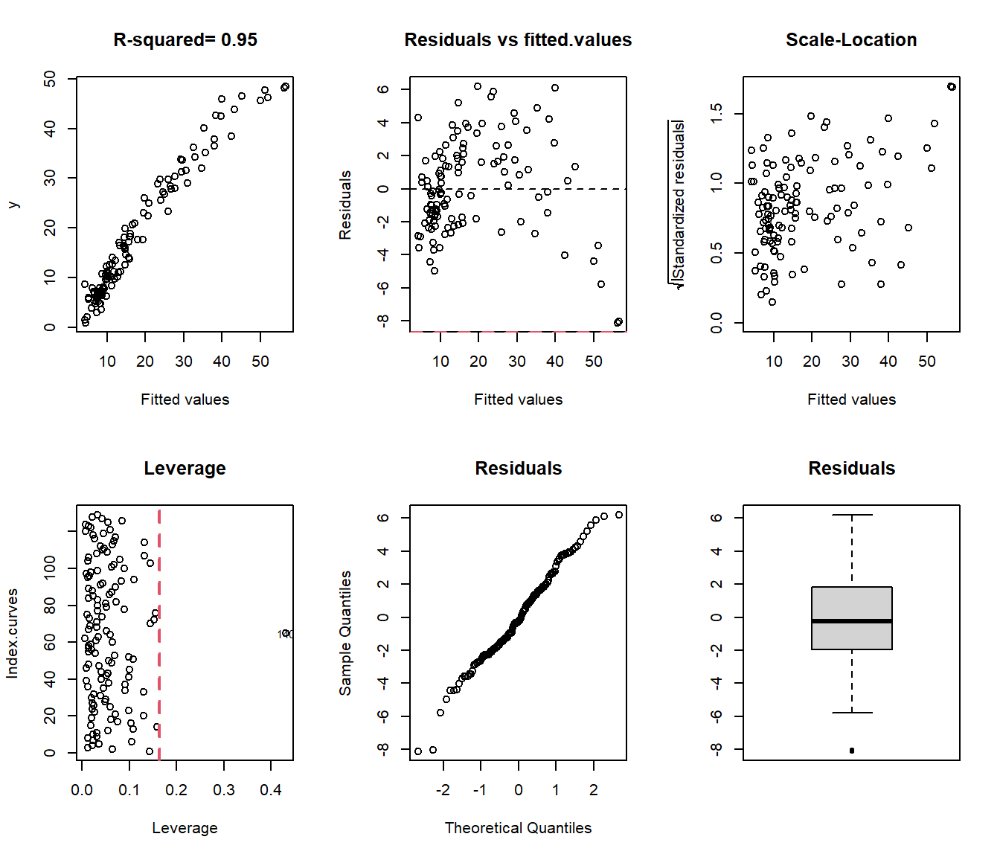
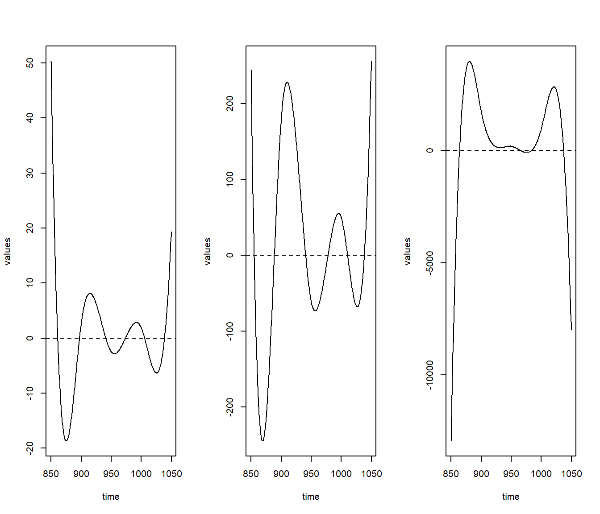
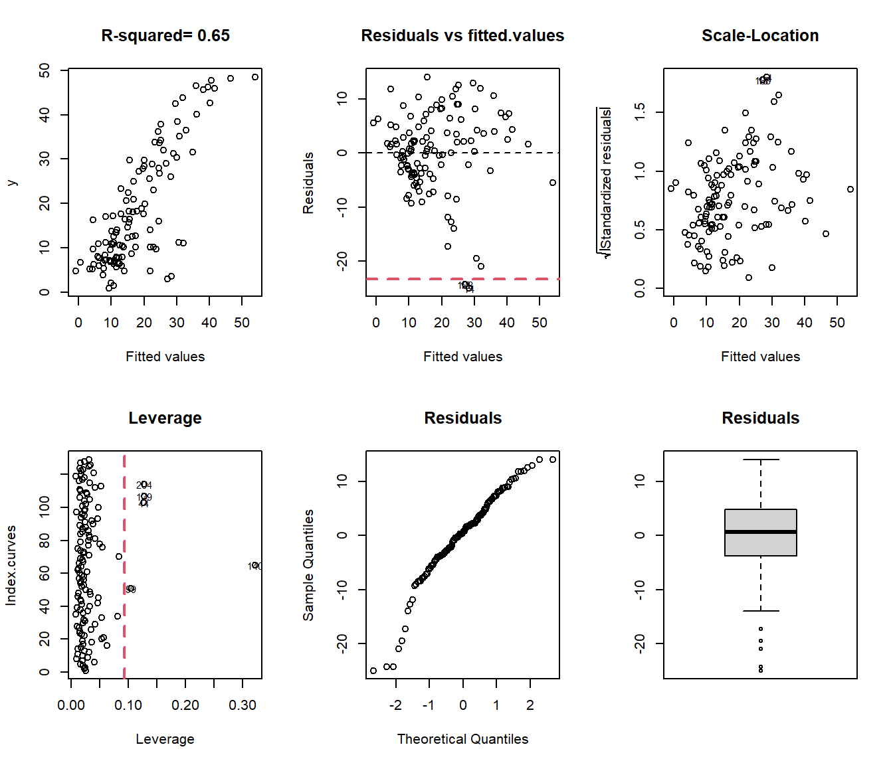
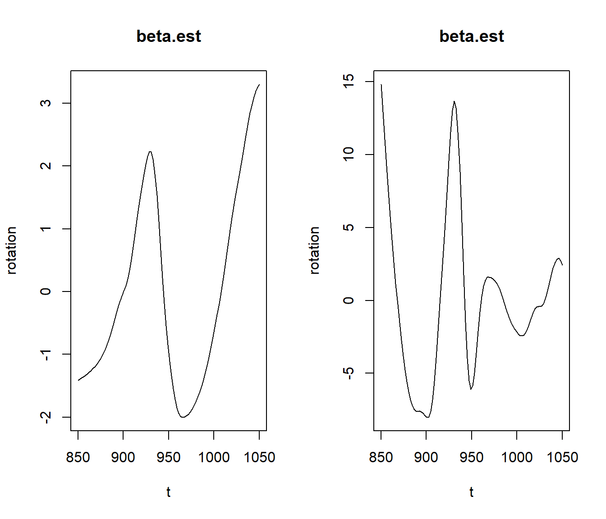
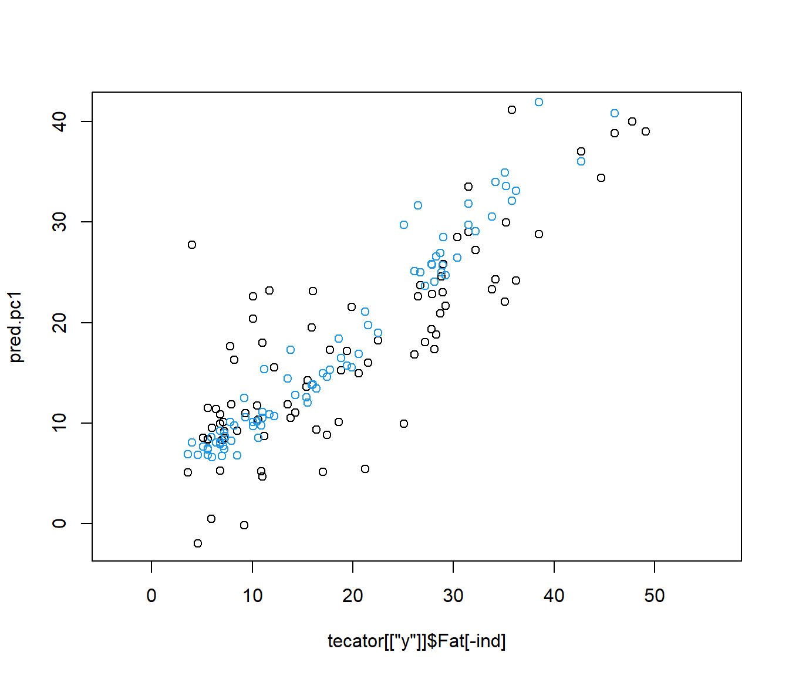
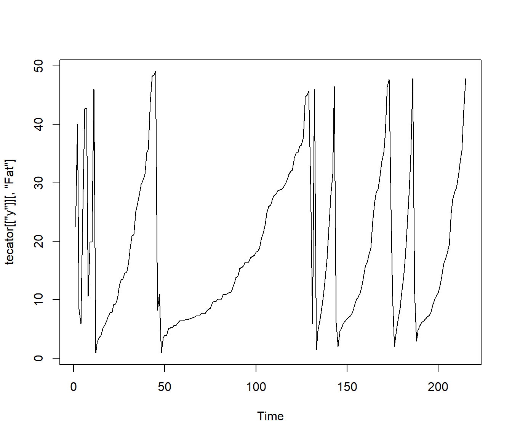
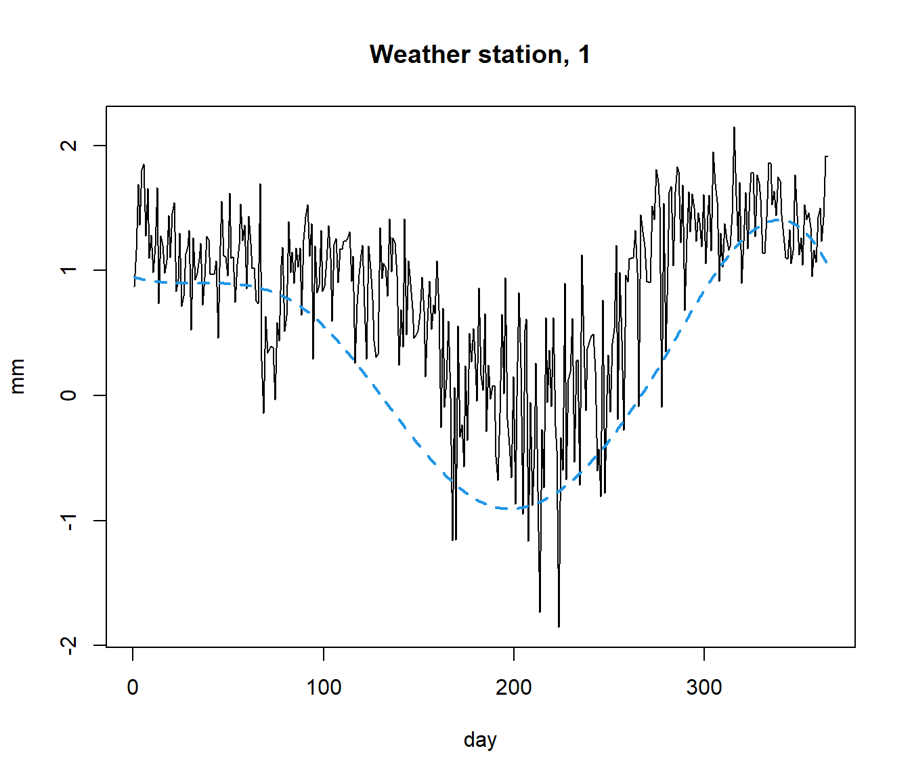

<!DOCTYPE html>
<html lang="" xml:lang="">
<head>

  <meta charset="utf-8" />
  <meta http-equiv="X-UA-Compatible" content="IE=edge" />
  <title>Chapter 2 Functional Regression Model | Functional Data Analysis using fda.usc and fda.clust packages</title>
  <meta name="description" content="Functional Data Analysis, Regression, Classification and Clustering using fda.usc and fda.clust packages" />
  <meta name="generator" content="bookdown 0.41 and GitBook 2.6.7" />

  <meta property="og:title" content="Chapter 2 Functional Regression Model | Functional Data Analysis using fda.usc and fda.clust packages" />
  <meta property="og:type" content="book" />
  
  <meta property="og:description" content="Functional Data Analysis, Regression, Classification and Clustering using fda.usc and fda.clust packages" />
  <meta name="github-repo" content="moviedo5/bookdown_fda_clust" />

  <meta name="twitter:card" content="summary" />
  <meta name="twitter:title" content="Chapter 2 Functional Regression Model | Functional Data Analysis using fda.usc and fda.clust packages" />
  
  <meta name="twitter:description" content="Functional Data Analysis, Regression, Classification and Clustering using fda.usc and fda.clust packages" />
  

<meta name="author" content="Manuel Oviedo de la Fuente (Universidade of A Coruña, CITIC, MODES RG) and Manuel Febrero-Bande (Universidade de Santaigo de Compostela, MODESTYA RG)" />


  <meta name="viewport" content="width=device-width, initial-scale=1" />
  <meta name="apple-mobile-web-app-capable" content="yes" />
  <meta name="apple-mobile-web-app-status-bar-style" content="black" />
  
  
<link rel="prev" href="definition.html"/>
<link rel="next" href="functional-supervised-classification.html"/>
<script src="libs/jquery-3.6.0/jquery-3.6.0.min.js"></script>
<script src="https://cdn.jsdelivr.net/npm/fuse.js@6.4.6/dist/fuse.min.js"></script>
<link href="libs/gitbook-2.6.7/css/style.css" rel="stylesheet" />
<link href="libs/gitbook-2.6.7/css/plugin-table.css" rel="stylesheet" />
<link href="libs/gitbook-2.6.7/css/plugin-bookdown.css" rel="stylesheet" />
<link href="libs/gitbook-2.6.7/css/plugin-highlight.css" rel="stylesheet" />
<link href="libs/gitbook-2.6.7/css/plugin-search.css" rel="stylesheet" />
<link href="libs/gitbook-2.6.7/css/plugin-fontsettings.css" rel="stylesheet" />
<link href="libs/gitbook-2.6.7/css/plugin-clipboard.css" rel="stylesheet" />


<link href="libs/anchor-sections-1.1.0/anchor-sections.css" rel="stylesheet" />
<link href="libs/anchor-sections-1.1.0/anchor-sections-hash.css" rel="stylesheet" />
<script src="libs/anchor-sections-1.1.0/anchor-sections.js"></script>


<style type="text/css">
pre > code.sourceCode { white-space: pre; position: relative; }
pre > code.sourceCode > span { line-height: 1.25; }
pre > code.sourceCode > span:empty { height: 1.2em; }
.sourceCode { overflow: visible; }
code.sourceCode > span { color: inherit; text-decoration: inherit; }
pre.sourceCode { margin: 0; }
@media screen {
div.sourceCode { overflow: auto; }
}
@media print {
pre > code.sourceCode { white-space: pre-wrap; }
pre > code.sourceCode > span { display: inline-block; text-indent: -5em; padding-left: 5em; }
}
pre.numberSource code
  { counter-reset: source-line 0; }
pre.numberSource code > span
  { position: relative; left: -4em; counter-increment: source-line; }
pre.numberSource code > span > a:first-child::before
  { content: counter(source-line);
    position: relative; left: -1em; text-align: right; vertical-align: baseline;
    border: none; display: inline-block;
    -webkit-touch-callout: none; -webkit-user-select: none;
    -khtml-user-select: none; -moz-user-select: none;
    -ms-user-select: none; user-select: none;
    padding: 0 4px; width: 4em;
    color: #aaaaaa;
  }
pre.numberSource { margin-left: 3em; border-left: 1px solid #aaaaaa;  padding-left: 4px; }
div.sourceCode
  {   }
@media screen {
pre > code.sourceCode > span > a:first-child::before { text-decoration: underline; }
}
code span.al { color: #ff0000; font-weight: bold; } /* Alert */
code span.an { color: #60a0b0; font-weight: bold; font-style: italic; } /* Annotation */
code span.at { color: #7d9029; } /* Attribute */
code span.bn { color: #40a070; } /* BaseN */
code span.bu { color: #008000; } /* BuiltIn */
code span.cf { color: #007020; font-weight: bold; } /* ControlFlow */
code span.ch { color: #4070a0; } /* Char */
code span.cn { color: #880000; } /* Constant */
code span.co { color: #60a0b0; font-style: italic; } /* Comment */
code span.cv { color: #60a0b0; font-weight: bold; font-style: italic; } /* CommentVar */
code span.do { color: #ba2121; font-style: italic; } /* Documentation */
code span.dt { color: #902000; } /* DataType */
code span.dv { color: #40a070; } /* DecVal */
code span.er { color: #ff0000; font-weight: bold; } /* Error */
code span.ex { } /* Extension */
code span.fl { color: #40a070; } /* Float */
code span.fu { color: #06287e; } /* Function */
code span.im { color: #008000; font-weight: bold; } /* Import */
code span.in { color: #60a0b0; font-weight: bold; font-style: italic; } /* Information */
code span.kw { color: #007020; font-weight: bold; } /* Keyword */
code span.op { color: #666666; } /* Operator */
code span.ot { color: #007020; } /* Other */
code span.pp { color: #bc7a00; } /* Preprocessor */
code span.sc { color: #4070a0; } /* SpecialChar */
code span.ss { color: #bb6688; } /* SpecialString */
code span.st { color: #4070a0; } /* String */
code span.va { color: #19177c; } /* Variable */
code span.vs { color: #4070a0; } /* VerbatimString */
code span.wa { color: #60a0b0; font-weight: bold; font-style: italic; } /* Warning */
</style>

<style type="text/css">
  
  div.hanging-indent{margin-left: 1.5em; text-indent: -1.5em;}
</style>
<style type="text/css">
/* Used with Pandoc 2.11+ new --citeproc when CSL is used */
div.csl-bib-body { }
div.csl-entry {
  clear: both;
  margin-bottom: 0em;
}
.hanging div.csl-entry {
  margin-left:2em;
  text-indent:-2em;
}
div.csl-left-margin {
  min-width:2em;
  float:left;
}
div.csl-right-inline {
  margin-left:2em;
  padding-left:1em;
}
div.csl-indent {
  margin-left: 2em;
}
</style>

<link rel="stylesheet" href="style.css" type="text/css" />
</head>

<body>


  <div class="book without-animation with-summary font-size-2 font-family-1" data-basepath=".">

    <div class="book-summary">
      <nav role="navigation">

<ul class="summary">
<li><a href="./">Escritura de libros con bookdown</a></li>

<li class="divider"></li>
<li class="chapter" data-level="" data-path="index.html"><a href="index.html"><i class="fa fa-check"></i>Introduction</a>
<ul>
<li class="chapter" data-level="" data-path="index.html"><a href="index.html#cran-task-view"><i class="fa fa-check"></i>CRAN Task View</a></li>
<li class="chapter" data-level="" data-path="index.html"><a href="index.html#functional-data-analysis-in-r"><i class="fa fa-check"></i>Functional Data Analysis in R</a></li>
<li class="chapter" data-level="" data-path="index.html"><a href="index.html#installation"><i class="fa fa-check"></i>Installation</a></li>
<li class="chapter" data-level="" data-path="index.html"><a href="index.html#quick-start"><i class="fa fa-check"></i>Quick Start</a></li>
</ul></li>
<li class="chapter" data-level="1" data-path="definition.html"><a href="definition.html"><i class="fa fa-check"></i><b>1</b> Functional Data: Definition, Representation and Manipulation</a>
<ul>
<li class="chapter" data-level="1.1" data-path="definition.html"><a href="definition.html#some-definitions-of-functional-data"><i class="fa fa-check"></i><b>1.1</b> Some definitions of Functional Data</a></li>
<li class="chapter" data-level="1.2" data-path="definition.html"><a href="definition.html#in-fda.usc-the-data-are-curves"><i class="fa fa-check"></i><b>1.2</b> In fda.usc: ``The data are curves’’</a>
<ul>
<li class="chapter" data-level="1.2.1" data-path="definition.html"><a href="definition.html#definition-of-fdata-class-in-r"><i class="fa fa-check"></i><b>1.2.1</b> Definition of –fdata– class in R</a></li>
<li class="chapter" data-level="1.2.2" data-path="definition.html"><a href="definition.html#some-utilities-of-fda.usc-package"><i class="fa fa-check"></i><b>1.2.2</b> Some utilities of fda.usc package</a></li>
<li class="chapter" data-level="1.2.3" data-path="definition.html"><a href="definition.html#definition-of-ldata-class-in-r"><i class="fa fa-check"></i><b>1.2.3</b> Definition of –ldata– class in R</a></li>
</ul></li>
<li class="chapter" data-level="1.3" data-path="definition.html"><a href="definition.html#resume-by-smoothing"><i class="fa fa-check"></i><b>1.3</b> Resume by smoothing</a>
<ul>
<li class="chapter" data-level="1.3.1" data-path="definition.html"><a href="definition.html#derivatives"><i class="fa fa-check"></i><b>1.3.1</b> Derivatives</a></li>
</ul></li>
<li class="chapter" data-level="1.4" data-path="definition.html"><a href="definition.html#correlation-distances-szekely2007"><i class="fa fa-check"></i><b>1.4</b> Correlation Distances <span class="citation">(G. J. Székely, Rizzo, and Bakirov 2007)</span></a>
<ul>
<li class="chapter" data-level="1.4.1" data-path="definition.html"><a href="definition.html#depth-for-functional-data"><i class="fa fa-check"></i><b>1.4.1</b> Depth for functional data</a></li>
<li class="chapter" data-level="1.4.2" data-path="definition.html"><a href="definition.html#depth-and-distances-for-multivariate-functional-data-cuesta2017hbox"><i class="fa fa-check"></i><b>1.4.2</b> Depth (and distances) for multivariate functional data <span class="citation">(J. A. Cuesta-Albertos, Febrero-Bande, and Oviedo de la Fuente 2017)</span></a></li>
<li class="chapter" data-level="1.4.3" data-path="definition.html"><a href="definition.html#outliers-detection"><i class="fa fa-check"></i><b>1.4.3</b> Outliers detection</a></li>
</ul></li>
<li class="chapter" data-level="" data-path="definition.html"><a href="definition.html#references"><i class="fa fa-check"></i>References</a></li>
</ul></li>
<li class="chapter" data-level="2" data-path="regression.html"><a href="regression.html"><i class="fa fa-check"></i><b>2</b> Functional Regression Model</a>
<ul>
<li class="chapter" data-level="2.1" data-path="regression.html"><a href="regression.html#functional-linear-model-flr-with-basis-representation"><i class="fa fa-check"></i><b>2.1</b> Functional linear model (FLR) with basis representation</a></li>
<li class="chapter" data-level="2.2" data-path="regression.html"><a href="regression.html#flm-with-functional-and-non-functional-covariates"><i class="fa fa-check"></i><b>2.2</b> FLM with functional and non functional covariates</a>
<ul>
<li class="chapter" data-level="2.2.1" data-path="regression.html"><a href="regression.html#predict-method-for-functional-regression-model"><i class="fa fa-check"></i><b>2.2.1</b> Predict method for functional regression model</a></li>
</ul></li>
<li class="chapter" data-level="2.3" data-path="regression.html"><a href="regression.html#other-procedures"><i class="fa fa-check"></i><b>2.3</b> Other procedures</a></li>
<li class="chapter" data-level="2.4" data-path="regression.html"><a href="regression.html#non-linear-model-fv2006"><i class="fa fa-check"></i><b>2.4</b> Non Linear Model <span class="citation">(Frédéric Ferraty and Vieu 2006)</span></a></li>
<li class="chapter" data-level="2.5" data-path="regression.html"><a href="regression.html#semi-linear-model-aneiros2005"><i class="fa fa-check"></i><b>2.5</b> Semi Linear Model <span class="citation">(Aneiros-Pérez and Vieu 2006)</span></a></li>
<li class="chapter" data-level="2.6" data-path="regression.html"><a href="regression.html#generalized-linear-models-muller2005generalized"><i class="fa fa-check"></i><b>2.6</b> Generalized Linear Models <span class="citation">(Müller and Stadtmüller 2005)</span></a></li>
<li class="chapter" data-level="2.7" data-path="regression.html"><a href="regression.html#generalized-functional-additive-model"><i class="fa fa-check"></i><b>2.7</b> Generalized Functional Additive Model</a></li>
<li class="chapter" data-level="2.8" data-path="regression.html"><a href="regression.html#functional-gls-model"><i class="fa fa-check"></i><b>2.8</b> Functional GLS model</a>
<ul>
<li class="chapter" data-level="2.8.1" data-path="regression.html"><a href="regression.html#dependent-data-example"><i class="fa fa-check"></i><b>2.8.1</b> Dependent data example,</a></li>
</ul></li>
<li class="chapter" data-level="2.9" data-path="regression.html"><a href="regression.html#functional-response-model"><i class="fa fa-check"></i><b>2.9</b> Functional Response Model</a></li>
<li class="chapter" data-level="2.10" data-path="regression.html"><a href="regression.html#other-models"><i class="fa fa-check"></i><b>2.10</b> Other Models:</a></li>
<li class="chapter" data-level="" data-path="regression.html"><a href="regression.html#references-1"><i class="fa fa-check"></i>References</a></li>
</ul></li>
<li class="chapter" data-level="3" data-path="functional-supervised-classification.html"><a href="functional-supervised-classification.html"><i class="fa fa-check"></i><b>3</b> Functional Supervised Classification</a>
<ul>
<li class="chapter" data-level="3.1" data-path="functional-supervised-classification.html"><a href="functional-supervised-classification.html#logistic-regression-model-glm-classif.glm"><i class="fa fa-check"></i><b>3.1</b> Logistic Regression Model (GLM): <code>classif.glm</code></a></li>
<li class="chapter" data-level="3.2" data-path="functional-supervised-classification.html"><a href="functional-supervised-classification.html#generalized-additive-models-gam-classif.gsam-and-classif.gkam"><i class="fa fa-check"></i><b>3.2</b> Generalized Additive Models (GAM): <code>classif.gsam</code> and <code>classif.gkam</code></a></li>
<li class="chapter" data-level="3.3" data-path="functional-supervised-classification.html"><a href="functional-supervised-classification.html#nonparametric-classification-methods-classif.knn-and-classif.np-ferraty2003"><i class="fa fa-check"></i><b>3.3</b> Nonparametric classification methods: <code>classif.knn</code> and <code>classif.np</code> <span class="citation">(Frédéric Ferraty and Vieu 2003)</span></a></li>
<li class="chapter" data-level="3.4" data-path="functional-supervised-classification.html"><a href="functional-supervised-classification.html#maximum-depth-classif.depth-li2012"><i class="fa fa-check"></i><b>3.4</b> Maximum depth: <code>classif.depth</code> <span class="citation">(Li, Cuesta-Albertos, and Liu 2012)</span></a></li>
<li class="chapter" data-level="3.5" data-path="functional-supervised-classification.html"><a href="functional-supervised-classification.html#the-ddgclassifier-classif.dd-cuesta2017hbox"><i class="fa fa-check"></i><b>3.5</b> The DD<span class="math inline">\(^G\)</span>–classifier <code>classif.DD</code> <span class="citation">(J. A. Cuesta-Albertos, Febrero-Bande, and Oviedo de la Fuente 2017)</span></a></li>
<li class="chapter" data-level="3.6" data-path="functional-supervised-classification.html"><a href="functional-supervised-classification.html#classifiers-adapted-from-multivariate-framework"><i class="fa fa-check"></i><b>3.6</b> Classifiers adapted from Multivariate Framework</a></li>
<li class="chapter" data-level="" data-path="functional-supervised-classification.html"><a href="functional-supervised-classification.html#references-2"><i class="fa fa-check"></i>References</a></li>
</ul></li>
<li class="chapter" data-level="4" data-path="variable-selection.html"><a href="variable-selection.html"><i class="fa fa-check"></i><b>4</b> Variable Selection</a>
<ul>
<li class="chapter" data-level="4.1" data-path="variable-selection.html"><a href="variable-selection.html#functiondal-regression-with-points-of-impact"><i class="fa fa-check"></i><b>4.1</b> Functiondal regression with points of impact</a>
<ul>
<li class="chapter" data-level="4.1.1" data-path="variable-selection.html"><a href="variable-selection.html#state-of-art"><i class="fa fa-check"></i><b>4.1.1</b> State of Art</a></li>
<li class="chapter" data-level="4.1.2" data-path="variable-selection.html"><a href="variable-selection.html#local-maxima-distance-correlation-approach-lmdc-ordonez2018"><i class="fa fa-check"></i><b>4.1.2</b> Local maxima distance correlation approach (LMDC), <span class="citation">(Ordóñez et al. 2018)</span></a></li>
<li class="chapter" data-level="4.1.3" data-path="variable-selection.html"><a href="variable-selection.html#lmdc-algorithm-lmdc.select-function"><i class="fa fa-check"></i><b>4.1.3</b> LMDC Algorithm: <code>LMDC.select()</code> function</a></li>
<li class="chapter" data-level="4.1.4" data-path="variable-selection.html"><a href="variable-selection.html#lmdc-algorithm-lmdc.regre-function"><i class="fa fa-check"></i><b>4.1.4</b> LMDC Algorithm: <code>LMDC.regre()</code> function</a></li>
</ul></li>
<li class="chapter" data-level="4.2" data-path="variable-selection.html"><a href="variable-selection.html#variable-selection-in-functional-regression"><i class="fa fa-check"></i><b>4.2</b> Variable selection in functional regression</a>
<ul>
<li class="chapter" data-level="4.2.1" data-path="variable-selection.html"><a href="variable-selection.html#state-of-art-1"><i class="fa fa-check"></i><b>4.2.1</b> State of Art</a></li>
<li class="chapter" data-level="4.2.2" data-path="variable-selection.html"><a href="variable-selection.html#algorithm"><i class="fa fa-check"></i><b>4.2.2</b> Algorithm</a></li>
</ul></li>
<li class="chapter" data-level="4.3" data-path="variable-selection.html"><a href="variable-selection.html#binary-classification-example"><i class="fa fa-check"></i><b>4.3</b> Binary classification example</a></li>
<li class="chapter" data-level="4.4" data-path="variable-selection.html"><a href="variable-selection.html#hyperspectral-images-example"><i class="fa fa-check"></i><b>4.4</b> Hyperspectral images example</a>
<ul>
<li class="chapter" data-level="4.4.1" data-path="variable-selection.html"><a href="variable-selection.html#hyperspectral-data-set-pavia-university"><i class="fa fa-check"></i><b>4.4.1</b> Hyperspectral Data set: Pavia University</a></li>
<li class="chapter" data-level="4.4.2" data-path="variable-selection.html"><a href="variable-selection.html#hyperspectral-images"><i class="fa fa-check"></i><b>4.4.2</b> Hyperspectral images</a></li>
<li class="chapter" data-level="4.4.3" data-path="variable-selection.html"><a href="variable-selection.html#pravia-univ.-results"><i class="fa fa-check"></i><b>4.4.3</b> Pravia Univ. Results</a></li>
<li class="chapter" data-level="4.4.4" data-path="variable-selection.html"><a href="variable-selection.html#functional-data-example"><i class="fa fa-check"></i><b>4.4.4</b> Functional data example</a></li>
</ul></li>
<li class="chapter" data-level="4.5" data-path="variable-selection.html"><a href="variable-selection.html#optimum-multiscale-selection-in-3d-point-cloud-classification-oviedo2021distance"><i class="fa fa-check"></i><b>4.5</b> Optimum Multiscale Selection in 3D Point Cloud Classification <span class="citation">(Oviedo-de la Fuente et al. 2021)</span></a></li>
<li class="chapter" data-level="4.6" data-path="variable-selection.html"><a href="variable-selection.html#model-comparison"><i class="fa fa-check"></i><b>4.6</b> Model Comparison</a></li>
</ul></li>
<li class="chapter" data-level="5" data-path="conclusions-and-future-work.html"><a href="conclusions-and-future-work.html"><i class="fa fa-check"></i><b>5</b> Conclusions and future work</a>
<ul>
<li class="chapter" data-level="5.1" data-path="conclusions-and-future-work.html"><a href="conclusions-and-future-work.html#conclusions"><i class="fa fa-check"></i><b>5.1</b> Conclusions</a></li>
<li class="chapter" data-level="5.2" data-path="conclusions-and-future-work.html"><a href="conclusions-and-future-work.html#code-r-scripts-and-notebooks"><i class="fa fa-check"></i><b>5.2</b> Code: R scripts and notebooks</a></li>
<li class="chapter" data-level="5.3" data-path="conclusions-and-future-work.html"><a href="conclusions-and-future-work.html#future-work"><i class="fa fa-check"></i><b>5.3</b> Future work</a></li>
<li class="chapter" data-level="5.4" data-path="conclusions-and-future-work.html"><a href="conclusions-and-future-work.html#future-work-wells-riley-equation"><i class="fa fa-check"></i><b>5.4</b> Future work: Wells-Riley equation</a></li>
<li class="chapter" data-level="" data-path="conclusions-and-future-work.html"><a href="conclusions-and-future-work.html#references-3"><i class="fa fa-check"></i>References</a></li>
</ul></li>
<li class="chapter" data-level="6" data-path="functional-clustering.html"><a href="functional-clustering.html"><i class="fa fa-check"></i><b>6</b> Functional Clustering</a>
<ul>
<li class="chapter" data-level="6.1" data-path="functional-clustering.html"><a href="functional-clustering.html#k-means-clustering-for-functional-data-hartigan1979algorithm"><i class="fa fa-check"></i><b>6.1</b> K-Means Clustering for functional data, <span class="citation">Hartigan and Wong (1979)</span></a></li>
<li class="chapter" data-level="" data-path="functional-clustering.html"><a href="functional-clustering.html#references-4"><i class="fa fa-check"></i>References</a></li>
<li class="chapter" data-level="" data-path="functional-clustering.html"><a href="functional-clustering.html#acknowledgements"><i class="fa fa-check"></i>Acknowledgements</a></li>
</ul></li>
<li class="divider"></li>
<li><a href="https://github.com/rstudio/bookdown" target="blank">Publicado con bookdown</a></li>

</ul>

      </nav>
    </div>

    <div class="book-body">
      <div class="body-inner">
        <div class="book-header" role="navigation">
          <h1>
            <i class="fa fa-circle-o-notch fa-spin"></i><a href="./">Functional Data Analysis using fda.usc and fda.clust packages</a>
          </h1>
        </div>

        <div class="page-wrapper" tabindex="-1" role="main">
          <div class="page-inner">

            <section class="normal" id="section-">
<div id="regression" class="section level1 hasAnchor" number="2">
<h1><span class="header-section-number">Chapter 2</span> Functional Regression Model<a href="regression.html#regression" class="anchor-section" aria-label="Anchor link to header"></a></h1>
<p>Regression models are those techniques for modeling and analyzing the relationship between a dependent variable and one or more independent variables. When one of the variables have a functional nature, we have functional regression models.</p>
<p>This section is devoted to all the functional regression models where the response variable is scalar and at least, there is one functional covariate.</p>
<p>For illustration, we will use the Tecator dataset to predict the fat contents from
The explanatory variables to introduce in the models are:p The curves of absorbance <span class="math inline">\(X(t)\)</span> as functional data or one of its two first derivatives (<span class="math inline">\(X.d1,X.d2\)</span>) and/or Water content as real variable.</p>
<div class="sourceCode" id="cb99"><pre class="sourceCode r"><code class="sourceCode r"><span id="cb99-1"><a href="regression.html#cb99-1" tabindex="-1"></a><span class="fu">library</span>(fda.usc.devel)</span>
<span id="cb99-2"><a href="regression.html#cb99-2" tabindex="-1"></a><span class="fu">data</span>(tecator)</span>
<span id="cb99-3"><a href="regression.html#cb99-3" tabindex="-1"></a>absorp<span class="ot">&lt;-</span>tecator<span class="sc">$</span>absorp</span>
<span id="cb99-4"><a href="regression.html#cb99-4" tabindex="-1"></a>ind<span class="ot">&lt;-</span><span class="fu">sample</span>(<span class="dv">215</span>,<span class="dv">129</span>) <span class="co">#ind = 1:129 </span></span>
<span id="cb99-5"><a href="regression.html#cb99-5" tabindex="-1"></a>tt <span class="ot">=</span> absorp[[<span class="st">&quot;argvals&quot;</span>]]</span>
<span id="cb99-6"><a href="regression.html#cb99-6" tabindex="-1"></a>y <span class="ot">=</span> tecator[[<span class="st">&quot;y&quot;</span>]]<span class="sc">$</span>Fat[ind]</span>
<span id="cb99-7"><a href="regression.html#cb99-7" tabindex="-1"></a>X <span class="ot">=</span> absorp[ind, ]</span>
<span id="cb99-8"><a href="regression.html#cb99-8" tabindex="-1"></a>X.d1 <span class="ot">=</span> <span class="fu">fdata.deriv</span>(X, <span class="at">nbasis =</span> <span class="dv">19</span>, <span class="at">nderiv =</span> <span class="dv">1</span>)</span>
<span id="cb99-9"><a href="regression.html#cb99-9" tabindex="-1"></a>X.d2 <span class="ot">=</span> <span class="fu">fdata.deriv</span>(X, <span class="at">nbasis =</span> <span class="dv">19</span>, <span class="at">nderiv =</span> <span class="dv">2</span>)</span>
<span id="cb99-10"><a href="regression.html#cb99-10" tabindex="-1"></a><span class="fu">par</span>(<span class="at">mfrow=</span><span class="fu">c</span>(<span class="dv">2</span>,<span class="dv">2</span>))</span>
<span id="cb99-11"><a href="regression.html#cb99-11" tabindex="-1"></a><span class="fu">plot</span>(X)</span>
<span id="cb99-12"><a href="regression.html#cb99-12" tabindex="-1"></a><span class="fu">plot</span>(X.d1)</span>
<span id="cb99-13"><a href="regression.html#cb99-13" tabindex="-1"></a><span class="fu">plot</span>(X.d2)</span>
<span id="cb99-14"><a href="regression.html#cb99-14" tabindex="-1"></a><span class="fu">boxplot</span>(y)</span></code></pre></div>
<p></p>
<p>In the following sections, regression methods implemented –fda.usc– pacakge in the package are presented one by one and illustrated with examples for estimating the <strong>Fat</strong> content of the Tecator dataset.</p>
<div id="functional-linear-model-flr-with-basis-representation" class="section level2 hasAnchor" number="2.1">
<h2><span class="header-section-number">2.1</span> Functional linear model (FLR) with basis representation<a href="regression.html#functional-linear-model-flr-with-basis-representation" class="anchor-section" aria-label="Anchor link to header"></a></h2>
<p>Supose that <span class="math inline">\(\mathcal{X} \in \mathcal{L}_{2}(T)\)</span> and <span class="math inline">\(y \in \mathbb{R}\)</span>. Assume also that
<span class="math inline">\(\mathbb{E}[\mathcal{X}(t)]=0, \forall t \in [0,T]\)</span> and <span class="math inline">\(\mathbb{E}[y]=0\)</span>.</p>
<p>The FLM states that
<span class="math display">\[y= \left\langle  \mathcal{X},\beta \right\rangle +\varepsilon=\int_{T}X(t)\beta(t)dt+\varepsilon\]</span>
where <span class="math inline">\(\beta \in \mathcal{L}_{2}(T)\)</span> and <span class="math inline">\(\varepsilon\)</span> is the errror term.</p>
<p>One way of estimating <span class="math inline">\(\beta\)</span>, it is representing the parametmer (and <span class="math inline">\(\mathcal{X}\)</span>) in a <span class="math inline">\(\mathcal{L}_2\)</span>-basis in the following way:</p>
<p><span class="math display">\[\beta(t)=\sum_k \beta_k \theta_k(t), \mathbf{X}(t)=\sum_k c_i \psi_k(t)\]</span></p>
<ul>
<li><code>fregre.basis()</code> fucntion uses fixed basis: B–spline, Fourier, etc. <span class="citation">Ramsay and Silverman (<a href="#ref-RS2005">2005b</a>)</span>, <span class="citation">Cardot, Ferraty, and Sarda (<a href="#ref-Cardot_1999">1999</a>)</span>)</li>
</ul>
<p>The next code illustrates how to estimate the fat contents using a sample of absorbances curves.</p>
<div class="sourceCode" id="cb100"><pre class="sourceCode r"><code class="sourceCode r"><span id="cb100-1"><a href="regression.html#cb100-1" tabindex="-1"></a>rangett <span class="ot">&lt;-</span> X<span class="sc">$</span>rangeval</span>
<span id="cb100-2"><a href="regression.html#cb100-2" tabindex="-1"></a>basis1 <span class="ot">=</span> <span class="fu">create.bspline.basis</span>(<span class="at">rangeval =</span> rangett, <span class="at">nbasis =</span> <span class="dv">17</span>)</span>
<span id="cb100-3"><a href="regression.html#cb100-3" tabindex="-1"></a>basis2 <span class="ot">=</span> <span class="fu">create.bspline.basis</span>(<span class="at">rangeval =</span> rangett, <span class="at">nbasis =</span> <span class="dv">7</span>)</span>
<span id="cb100-4"><a href="regression.html#cb100-4" tabindex="-1"></a>res.basis0 <span class="ot">=</span> <span class="fu">fregre.basis</span>(X, y, <span class="at">basis.x =</span> basis1, <span class="at">basis.b =</span> basis2)</span>
<span id="cb100-5"><a href="regression.html#cb100-5" tabindex="-1"></a>res.basis1 <span class="ot">=</span> <span class="fu">fregre.basis</span>(X.d1, y, <span class="at">basis.x =</span> basis1, <span class="at">basis.b =</span> basis2)</span>
<span id="cb100-6"><a href="regression.html#cb100-6" tabindex="-1"></a>res.basis2 <span class="ot">=</span> <span class="fu">fregre.basis</span>(X.d2, y, <span class="at">basis.x =</span> basis1, <span class="at">basis.b =</span> basis2)</span>
<span id="cb100-7"><a href="regression.html#cb100-7" tabindex="-1"></a>res.basis0<span class="sc">$</span>r2;res.basis1<span class="sc">$</span>r2;res.basis2<span class="sc">$</span>r2</span></code></pre></div>
<pre><code>## [1] 0.9385496</code></pre>
<pre><code>## [1] 0.9360606</code></pre>
<pre><code>## [1] 0.9518397</code></pre>
<div class="sourceCode" id="cb104"><pre class="sourceCode r"><code class="sourceCode r"><span id="cb104-1"><a href="regression.html#cb104-1" tabindex="-1"></a><span class="fu">summary</span>(res.basis2)</span></code></pre></div>
<pre><code>##  *** Summary Functional Data Regression with representation in Basis *** 
## 
## Call:
## fregre.basis(fdataobj = X.d2, y = y, basis.x = basis1, basis.b = basis2)
## 
## Residuals:
##     Min      1Q  Median      3Q     Max 
## -8.9498 -1.5962 -0.2428  1.8891  6.1841 
## 
## Coefficients:
##                               Estimate Std. Error t value Pr(&gt;|t|)    
## (Intercept)                  1.759e+01  2.636e-01  66.723  &lt; 2e-16 ***
## Spectrometriccurves.bspl4.1 -1.294e+04  3.849e+03  -3.361 0.001040 ** 
## Spectrometriccurves.bspl4.2  9.261e+03  2.901e+03   3.192 0.001801 ** 
## Spectrometriccurves.bspl4.3 -1.215e+03  1.426e+03  -0.852 0.395973    
## Spectrometriccurves.bspl4.4  9.804e+02  1.092e+03   0.897 0.371275    
## Spectrometriccurves.bspl4.5 -1.599e+03  1.126e+03  -1.420 0.158232    
## Spectrometriccurves.bspl4.6  6.896e+03  1.802e+03   3.826 0.000207 ***
## Spectrometriccurves.bspl4.7 -7.985e+03  1.438e+03  -5.554 1.69e-07 ***
## ---
## Signif. codes:  0 &#39;***&#39; 0.001 &#39;**&#39; 0.01 &#39;*&#39; 0.05 &#39;.&#39; 0.1 &#39; &#39; 1
## 
## Residual standard error: 2.994 on 121 degrees of freedom
## Multiple R-squared:  0.9518, Adjusted R-squared:  0.9491 
## F-statistic: 341.6 on 7 and 121 DF,  p-value: &lt; 2.2e-16
## 
## -Names of possible atypical curves: No atypical curves 
## -Names of possible influence curves: 140</code></pre>
<p></p>
<div class="sourceCode" id="cb106"><pre class="sourceCode r"><code class="sourceCode r"><span id="cb106-1"><a href="regression.html#cb106-1" tabindex="-1"></a><span class="fu">par</span>(<span class="at">mfrow=</span><span class="fu">c</span>(<span class="dv">1</span>,<span class="dv">3</span>))</span>
<span id="cb106-2"><a href="regression.html#cb106-2" tabindex="-1"></a><span class="fu">plot</span>(res.basis0<span class="sc">$</span>beta.est)</span></code></pre></div>
<pre><code>## [1] &quot;done&quot;</code></pre>
<div class="sourceCode" id="cb108"><pre class="sourceCode r"><code class="sourceCode r"><span id="cb108-1"><a href="regression.html#cb108-1" tabindex="-1"></a><span class="fu">plot</span>(res.basis1<span class="sc">$</span>beta.est)</span></code></pre></div>
<pre><code>## [1] &quot;done&quot;</code></pre>
<div class="sourceCode" id="cb110"><pre class="sourceCode r"><code class="sourceCode r"><span id="cb110-1"><a href="regression.html#cb110-1" tabindex="-1"></a><span class="fu">plot</span>(res.basis2<span class="sc">$</span>beta.est)</span></code></pre></div>
<p></p>
<pre><code>## [1] &quot;done&quot;</code></pre>
<p>The choice of the appropiate basis (and the number of basis elements) becomes now in a crucial step:</p>
<div class="sourceCode" id="cb112"><pre class="sourceCode r"><code class="sourceCode r"><span id="cb112-1"><a href="regression.html#cb112-1" tabindex="-1"></a>res.basis.cv <span class="ot">=</span> <span class="fu">fregre.basis</span>(X, y)</span>
<span id="cb112-2"><a href="regression.html#cb112-2" tabindex="-1"></a><span class="fu">summary</span>(res.basis.cv)</span></code></pre></div>
<pre><code>##  *** Summary Functional Data Regression with representation in Basis *** 
## 
## Call:
## fregre.basis(fdataobj = X, y = y)
## 
## Residuals:
##      Min       1Q   Median       3Q      Max 
## -10.3657  -2.1421  -0.1094   2.1998   6.5177 
## 
## Coefficients:
##                               Estimate Std. Error t value Pr(&gt;|t|)    
## (Intercept)                    17.5884     0.2757  63.790   &lt;2e-16 ***
## Spectrometriccurves.bspl4.1  -200.0776    93.7095  -2.135   0.0348 *  
## Spectrometriccurves.bspl4.2   242.9587   112.0151   2.169   0.0321 *  
## Spectrometriccurves.bspl4.3  -133.6675    72.6212  -1.841   0.0682 .  
## Spectrometriccurves.bspl4.4    23.7801    33.6901   0.706   0.4817    
## Spectrometriccurves.bspl4.5    14.2783    19.4473   0.734   0.4643    
## Spectrometriccurves.bspl4.6   -23.9989    16.8771  -1.422   0.1577    
## Spectrometriccurves.bspl4.7    46.5994    27.9568   1.667   0.0982 .  
## Spectrometriccurves.bspl4.8  -104.1480    65.9443  -1.579   0.1169    
## Spectrometriccurves.bspl4.9   154.0717   108.4606   1.421   0.1581    
## Spectrometriccurves.bspl4.10 -123.4221    94.1397  -1.311   0.1924    
## ---
## Signif. codes:  0 &#39;***&#39; 0.001 &#39;**&#39; 0.01 &#39;*&#39; 0.05 &#39;.&#39; 0.1 &#39; &#39; 1
## 
## Residual standard error: 3.132 on 118 degrees of freedom
## Multiple R-squared:  0.9486, Adjusted R-squared:  0.9443 
## F-statistic: 217.8 on 10 and 118 DF,  p-value: &lt; 2.2e-16
## 
## -Names of possible atypical curves: 43 
## -Names of possible influence curves: 86 89 140 43 6</code></pre>
<p></p>
<ul>
<li>Functional Principal Components (FPC).<span class="citation">(<a href="#ref-Cardot_1999">Cardot, Ferraty, and Sarda 1999</a>)</span>, <code>fregre.pc()</code></li>
</ul>
<div class="sourceCode" id="cb114"><pre class="sourceCode r"><code class="sourceCode r"><span id="cb114-1"><a href="regression.html#cb114-1" tabindex="-1"></a>x<span class="ot">&lt;-</span>X</span>
<span id="cb114-2"><a href="regression.html#cb114-2" tabindex="-1"></a>basis.pc0 <span class="ot">=</span> <span class="fu">create.pc.basis</span>(X,<span class="dv">1</span><span class="sc">:</span><span class="dv">3</span>)</span>
<span id="cb114-3"><a href="regression.html#cb114-3" tabindex="-1"></a>res.pc1 <span class="ot">=</span> <span class="fu">fregre.pc</span>(X, y, <span class="at">basis.x =</span> basis.pc)</span>
<span id="cb114-4"><a href="regression.html#cb114-4" tabindex="-1"></a><span class="fu">summary</span>(res.pc1)</span></code></pre></div>
<pre><code>##  *** Summary Functional Data Regression with Principal Components ***
## 
## Call:
## fregre.pc(fdataobj = X, y = y, basis.x = basis.pc)
## 
## Residuals:
##     Min      1Q  Median      3Q     Max 
## -24.471  -4.389   0.886   5.328  14.585 
## 
## Coefficients:
##              Estimate Std. Error t value Pr(&gt;|t|)    
## (Intercept)  17.58837    0.72555  24.241   &lt;2e-16 ***
## PC1           0.99689    0.09838  10.133   &lt;2e-16 ***
## PC2          -1.50819    1.18685  -1.271    0.206    
## PC3         -21.84347    1.90208 -11.484   &lt;2e-16 ***
## ---
## Signif. codes:  0 &#39;***&#39; 0.001 &#39;**&#39; 0.01 &#39;*&#39; 0.05 &#39;.&#39; 0.1 &#39; &#39; 1
## 
## Residual standard error: 8.241 on 125 degrees of freedom
## Multiple R-squared:  0.6231, Adjusted R-squared:  0.614 
## F-statistic: 68.88 on 3 and 125 DF,  p-value: &lt; 2.2e-16
## 
## 
## -With 3 Principal Components is  explained  99.47 %
##  of the variability of explicative variables. 
## 
## -Variability for each  principal components -PC- (%):
##   PC1   PC2   PC3 
## 98.54  0.66  0.26 
## -Names of possible atypical curves: No atypical curves 
## -Names of possible influence curves: 18 185 99 140 44</code></pre>
<p></p>
<div class="sourceCode" id="cb116"><pre class="sourceCode r"><code class="sourceCode r"><span id="cb116-1"><a href="regression.html#cb116-1" tabindex="-1"></a>res.pc2 <span class="ot">=</span> <span class="fu">fregre.pc.cv</span>(X, y)</span>
<span id="cb116-2"><a href="regression.html#cb116-2" tabindex="-1"></a><span class="fu">summary</span>(res.pc2)</span></code></pre></div>
<pre><code>##            Length Class     Mode   
## fregre.pc  19     fregre.fd list   
## pc.opt      5     -none-    numeric
## lambda.opt  1     -none-    numeric
## PC.order    8     -none-    numeric
## MSC.order   8     -none-    numeric</code></pre>
<div class="sourceCode" id="cb118"><pre class="sourceCode r"><code class="sourceCode r"><span id="cb118-1"><a href="regression.html#cb118-1" tabindex="-1"></a><span class="fu">par</span>(<span class="at">mfrow=</span><span class="fu">c</span>(<span class="dv">1</span>,<span class="dv">2</span>))</span>
<span id="cb118-2"><a href="regression.html#cb118-2" tabindex="-1"></a><span class="fu">plot</span>(res.pc1<span class="sc">$</span>beta.est)</span>
<span id="cb118-3"><a href="regression.html#cb118-3" tabindex="-1"></a><span class="fu">plot</span>(res.pc2[[<span class="dv">1</span>]]<span class="sc">$</span>beta.est)</span></code></pre></div>
<p></p>
</div>
<div id="flm-with-functional-and-non-functional-covariates" class="section level2 hasAnchor" number="2.2">
<h2><span class="header-section-number">2.2</span> FLM with functional and non functional covariates<a href="regression.html#flm-with-functional-and-non-functional-covariates" class="anchor-section" aria-label="Anchor link to header"></a></h2>
<p><span class="math display">\[E(y)=\alpha+\mathbf{Z}\beta+\sum_{q=1}^Q \left\langle \mathcal{X}^{q}(t),\beta_{q}(t)\right\rangle
\]</span></p>
<p>where <span class="math inline">\(\left\{\mathcal{X}_q(t)\right\}_{q=1}^Q\)</span> are function covariates and <span class="math inline">\(\mathbf{Z}=\left\{{Z_j}\right\}_{j=1}^J\)</span> the non–functional covariates.</p>
<div class="sourceCode" id="cb119"><pre class="sourceCode r"><code class="sourceCode r"><span id="cb119-1"><a href="regression.html#cb119-1" tabindex="-1"></a>dataf <span class="ot">=</span> <span class="fu">as.data.frame</span>(tecator[[<span class="st">&quot;y&quot;</span>]][ind,]) <span class="co"># Fat, Protein, Water</span></span>
<span id="cb119-2"><a href="regression.html#cb119-2" tabindex="-1"></a>basis.pc2 <span class="ot">=</span> <span class="fu">create.pc.basis</span>(X.d2,<span class="dv">1</span><span class="sc">:</span><span class="dv">4</span>)</span>
<span id="cb119-3"><a href="regression.html#cb119-3" tabindex="-1"></a>basis.x <span class="ot">=</span> <span class="fu">list</span>(<span class="at">X =</span> basis.pc0, <span class="at">X.d2 =</span>basis.pc2)</span>
<span id="cb119-4"><a href="regression.html#cb119-4" tabindex="-1"></a>f <span class="ot">=</span> Fat <span class="sc">~</span> X<span class="sc">+</span>X.d2</span>
<span id="cb119-5"><a href="regression.html#cb119-5" tabindex="-1"></a>ldata <span class="ot">=</span> <span class="fu">list</span>(<span class="at">df =</span> dataf, <span class="at">X=</span>X,<span class="at">X.d2=</span>X.d2)</span>
<span id="cb119-6"><a href="regression.html#cb119-6" tabindex="-1"></a>res.lm1 <span class="ot">=</span> <span class="fu">fregre.lm</span>(f, ldata, <span class="at">basis.x =</span> basis.x)</span>
<span id="cb119-7"><a href="regression.html#cb119-7" tabindex="-1"></a>f <span class="ot">=</span> Fat <span class="sc">~</span> Water<span class="sc">+</span>X.d2</span>
<span id="cb119-8"><a href="regression.html#cb119-8" tabindex="-1"></a>res.lm2 <span class="ot">=</span> <span class="fu">fregre.lm</span>(f, ldata, <span class="at">basis.x =</span> basis.x)</span></code></pre></div>
<pre><code>## 
## Call:
## lm(formula = pf, data = XX, x = TRUE)
## 
## Residuals:
##     Min      1Q  Median      3Q     Max 
## -9.9417 -1.6197 -0.2995  1.5864  9.4955 
## 
## Coefficients:
##               Estimate Std. Error t value Pr(&gt;|t|)    
## (Intercept)    17.5884     0.2659  66.142  &lt; 2e-16 ***
## X.PC1           0.1127     0.1023   1.102  0.27283    
## X.PC2           7.1807     3.2173   2.232  0.02746 *  
## X.PC3         -19.8307     6.9644  -2.847  0.00518 ** 
## X.d2.PC1     3066.6836   563.3407   5.444 2.78e-07 ***
## X.d2.PC2     5507.7858  2668.4922   2.064  0.04115 *  
## X.d2.PC3     1879.3468  1017.4538   1.847  0.06717 .  
## X.d2.PC4    -2644.9925  3131.4915  -0.845  0.39998    
## ---
## Signif. codes:  0 &#39;***&#39; 0.001 &#39;**&#39; 0.01 &#39;*&#39; 0.05 &#39;.&#39; 0.1 &#39; &#39; 1
## 
## Residual standard error: 3.02 on 121 degrees of freedom
## Multiple R-squared:  0.951,  Adjusted R-squared:  0.9482 
## F-statistic: 335.4 on 7 and 121 DF,  p-value: &lt; 2.2e-16</code></pre>
<p></p>
<div id="predict-method-for-functional-regression-model" class="section level3 hasAnchor" number="2.2.1">
<h3><span class="header-section-number">2.2.1</span> Predict method for functional regression model<a href="regression.html#predict-method-for-functional-regression-model" class="anchor-section" aria-label="Anchor link to header"></a></h3>
<p></p>
</div>
</div>
<div id="other-procedures" class="section level2 hasAnchor" number="2.3">
<h2><span class="header-section-number">2.3</span> Other procedures<a href="regression.html#other-procedures" class="anchor-section" aria-label="Anchor link to header"></a></h2>
<ol start="4" style="list-style-type: decimal">
<li>Other procedures</li>
</ol>
<ul>
<li>Partial Least Squares (FPLS). <code>fregre.pls()</code>, <span class="citation">Preda and Saporta (<a href="#ref-pedra2005">2005</a>)</span></li>
<li>Penalized versions and parameter selection: <code>fregre.pc.cv</code>, <code>fregre.basis.cv</code>, <code>fregre.np.cv</code> <span class="citation">(<a href="#ref-Febrero2012">Febrero-Bande and Oviedo de la Fuente 2012</a>)</span></li>
<li>F-test for the FLM with scalar response: <code>flm.Ftest</code>, <code>F-test</code> <span class="citation">(<a href="#ref-garcia2014goodness">Garcı́a-Portugués, González-Manteiga, and Febrero-Bande 2014</a>)</span></li>
<li>Goodness-of-fit test for the FLM with scalar response: <code>flm.test</code> <span class="citation">(<a href="#ref-garcia2014goodness">Garcı́a-Portugués, González-Manteiga, and Febrero-Bande 2014</a>)</span></li>
<li>Measures of influence in FLM with scalar response: <code>influence.fdata</code>,<span class="citation">(<a href="#ref-Febrero2010">Febrero-Bande, Galeano, and González-Manteiga 2010</a>)</span></li>
<li>Beta parameter estimation by wild or smoothed bootstrap procedure: <code>fregre.bootstrap</code></li>
<li>FLM with a functional response: <code>fregre.basis.fr</code> <span class="citation">(<a href="#ref-chiou2004functional">Chiou et al. 2004</a>)</span></li>
</ul>
</div>
<div id="non-linear-model-fv2006" class="section level2 hasAnchor" number="2.4">
<h2><span class="header-section-number">2.4</span> Non Linear Model <span class="citation">(<a href="#ref-FV2006">Frédéric Ferraty and Vieu 2006</a>)</span><a href="regression.html#non-linear-model-fv2006" class="anchor-section" aria-label="Anchor link to header"></a></h2>
<p>Supose <span class="math inline">\((\mathcal{X},Y)\)</span> are a pair of r.v. with <span class="math inline">\(y\in \mathbb{R}\)</span> where <span class="math inline">\(\mathbb{E}\)</span> is a semi-metric space. To predict the resonse <span class="math inline">\(Y\)</span> with <span class="math inline">\(\mathcal{X}\)</span>, the estimation is:</p>
<p><span class="math display">\[m(\mathcal{X})=\mathbb{E}(Y|X=\mathcal{X})\]</span>, where the NW estimator is given by:</p>
<p><span class="math display">\[\hat{m}(\mathcal{X})=\frac{\sum_{i=1}^n Y_i{ K(d(\mathcal{X},X_i)/h)}}{\sum_{i=1}^n  {K(d(\mathcal{X},X_i)/h)}}\]</span></p>
<p>where K is an asymmetric kernel function and h is the bandwidth parameter.</p>
</div>
<div id="semi-linear-model-aneiros2005" class="section level2 hasAnchor" number="2.5">
<h2><span class="header-section-number">2.5</span> Semi Linear Model <span class="citation">(<a href="#ref-Aneiros2005">Aneiros-Pérez and Vieu 2006</a>)</span><a href="regression.html#semi-linear-model-aneiros2005" class="anchor-section" aria-label="Anchor link to header"></a></h2>
<p>Let <span class="math inline">\((\mathcal{X},\mathbf{Z},y)\)</span> with <span class="math inline">\(y\in \mathbb{R}\)</span> (response), <span class="math inline">\(\mathcal{X}\in \mathbb{E}\)</span> (functional) and <span class="math inline">\(\mathbf{Z} \in \mathbb{R}^p\)</span> (MV covariates).</p>
<p><span class="math display">\[y = Z + m(X) + \varepsilon\]</span></p>
<p>Arguments for fregre.np() and fregre.plm() function</p>
<ul>
<li>–Ker–: type of asymmetric kernel function, by default asymmetric normal kernel (cosine, epanechnicov, quadratic,….).</li>
<li>–metric–: type of metric or semimetric.
–type.S–: type of smoothing matrix <span class="math inline">\(\mathbf{S}\)</span>: <code>S.NW</code>, <code>S.LLR</code>, <code>S.KNN</code>.</li>
</ul>
<div class="sourceCode" id="cb121"><pre class="sourceCode r"><code class="sourceCode r"><span id="cb121-1"><a href="regression.html#cb121-1" tabindex="-1"></a>tecator<span class="ot">&lt;-</span><span class="fu">list</span>(<span class="st">&quot;df&quot;</span><span class="ot">=</span>tecator<span class="sc">$</span>y,<span class="st">&quot;absorp.fdata&quot;</span><span class="ot">=</span>tecator<span class="sc">$</span>absorp.fdata)</span>
<span id="cb121-2"><a href="regression.html#cb121-2" tabindex="-1"></a>X<span class="ot">=</span>tecator<span class="sc">$</span>absorp.fdata</span>
<span id="cb121-3"><a href="regression.html#cb121-3" tabindex="-1"></a>y<span class="ot">&lt;-</span>tecator<span class="sc">$</span>df<span class="sc">$</span>Fat</span>
<span id="cb121-4"><a href="regression.html#cb121-4" tabindex="-1"></a></span>
<span id="cb121-5"><a href="regression.html#cb121-5" tabindex="-1"></a>np<span class="ot">&lt;-</span><span class="fu">fregre.np</span>(X, y, <span class="at">metric =</span> semimetric.deriv, <span class="at">nderiv =</span> <span class="dv">1</span>,<span class="at">type.S =</span> S.KNN)</span></code></pre></div>
<p>Again, it has also implemented the function <code>fregre.np.cv</code> to estimate the smoothing parameter <span class="math inline">\(h\)</span> by the validation criteria.</p>
<div class="sourceCode" id="cb122"><pre class="sourceCode r"><code class="sourceCode r"><span id="cb122-1"><a href="regression.html#cb122-1" tabindex="-1"></a>np<span class="ot">&lt;-</span><span class="fu">fregre.np</span>(X, y, <span class="at">metric =</span> semimetric.deriv, <span class="at">nderiv =</span> <span class="dv">1</span>,<span class="at">type.S =</span> S.KNN)</span>
<span id="cb122-2"><a href="regression.html#cb122-2" tabindex="-1"></a>np.cv<span class="ot">&lt;-</span><span class="fu">fregre.np.cv</span>(X, y, <span class="at">metric =</span> semimetric.deriv, <span class="at">nderiv =</span> <span class="dv">1</span>,<span class="at">type.S =</span> S.KNN,<span class="at">h=</span><span class="fu">c</span>(<span class="dv">3</span><span class="sc">:</span><span class="dv">9</span>))</span>
<span id="cb122-3"><a href="regression.html#cb122-3" tabindex="-1"></a><span class="fu">c</span>(np<span class="sc">$</span>h.opt,np.cv<span class="sc">$</span>h.opt)</span></code></pre></div>
<pre><code>## [1] 12  3</code></pre>
<div class="sourceCode" id="cb124"><pre class="sourceCode r"><code class="sourceCode r"><span id="cb124-1"><a href="regression.html#cb124-1" tabindex="-1"></a><span class="fu">c</span>(np<span class="sc">$</span>r2,np.cv<span class="sc">$</span>r2)</span></code></pre></div>
<pre><code>## [1] 0.7388655 0.9438220</code></pre>
</div>
<div id="generalized-linear-models-muller2005generalized" class="section level2 hasAnchor" number="2.6">
<h2><span class="header-section-number">2.6</span> Generalized Linear Models <span class="citation">(<a href="#ref-muller2005generalized">Müller and Stadtmüller 2005</a>)</span><a href="regression.html#generalized-linear-models-muller2005generalized" class="anchor-section" aria-label="Anchor link to header"></a></h2>
<p>One natural extension of LM model is the generalized functional linear regression model (GFLM) which allows various types of the response. In the GLM framework it is generally assumed that <span class="math inline">\(y_i|X_i\)</span> can be chosen within the set of distributions belonging to the exponential family.</p>
<p>In Generalized Functional Linear Model (FGLM), The scalar response <span class="math inline">\(y\)</span>(belonging to a Exponential Family PDF) is estimated by functional <span class="math inline">\(\left\{\mathcal{X}_q(t)\right\}_{q=1}^Q\)</span> and also non–functional <span class="math inline">\(\mathbf{Z}=\left\{{Z_j}\right\}_{j=1}^J\)</span> covariates by:</p>
<p><span class="math display">\[E(y)=g^{-1}\left(\alpha+\mathbf{Z}\beta+\sum_{q=1}^Q \left\langle \mathcal{X}^{q}(t),\beta_{q}(t)\right\rangle\right)
\]</span>
where <span class="math inline">\(g()\)</span> is the inverse link function.</p>
<blockquote>
<p>Example of logistic regression</p>
</blockquote>
<p>In logistic regression, the probability, <span class="math inline">\(\pi_i\)</span> , of the occurrence of an event, <span class="math inline">\(Y_i = 1\)</span>, rather than the event <span class="math inline">\(Y_i = 0\)</span>, conditional on a vector of covariates <span class="math inline">\(\mathcal{X}_i(t)\)</span> is expressed as:</p>
<p><span class="math display">\[ p_i = \mathbb{P}[Y = 1|{X_i(t): t \in T }]=\frac{+exp\left\{\alpha+\int_{T}X_{i}(t)\beta(t)dt \right\}}{1+exp\left\{\alpha+\int_{T}X_{i}(t)\beta(t)dt \right\}}\ , i= 1,\ldots,n\]</span></p>
<p>with <span class="math inline">\(\epsilon\)</span> are the independent errors with zero mean.</p>
<div class="sourceCode" id="cb126"><pre class="sourceCode r"><code class="sourceCode r"><span id="cb126-1"><a href="regression.html#cb126-1" tabindex="-1"></a><span class="fu">data</span>(tecator)</span>
<span id="cb126-2"><a href="regression.html#cb126-2" tabindex="-1"></a><span class="fu">names</span>(tecator)[<span class="dv">2</span>]<span class="ot">&lt;-</span><span class="st">&quot;df&quot;</span></span>
<span id="cb126-3"><a href="regression.html#cb126-3" tabindex="-1"></a>tecator<span class="sc">$</span>df<span class="sc">$</span>fat15<span class="ot">&lt;-</span><span class="fu">ifelse</span>(tecator<span class="sc">$</span>df<span class="sc">$</span>Fat<span class="sc">&lt;</span><span class="dv">15</span>,<span class="dv">0</span>,<span class="dv">1</span>)</span>
<span id="cb126-4"><a href="regression.html#cb126-4" tabindex="-1"></a>tecator<span class="sc">$</span>absorp.d2<span class="ot">=</span><span class="fu">fdata.deriv</span>(tecator<span class="sc">$</span>absorp.fdata,<span class="at">nderiv=</span><span class="dv">2</span>)</span>
<span id="cb126-5"><a href="regression.html#cb126-5" tabindex="-1"></a>res.glm<span class="ot">&lt;-</span><span class="fu">fregre.glm</span>(fat15 <span class="sc">~</span> absorp.d2,<span class="at">data=</span>tecator,<span class="at">family=</span><span class="fu">binomial</span>())</span>
<span id="cb126-6"><a href="regression.html#cb126-6" tabindex="-1"></a><span class="co">#summary(a)</span></span>
<span id="cb126-7"><a href="regression.html#cb126-7" tabindex="-1"></a>yfit<span class="ot">&lt;-</span><span class="fu">ifelse</span>(res.glm<span class="sc">$</span>fitted.values<span class="sc">&lt;</span>.<span class="dv">5</span>,<span class="dv">0</span>,<span class="dv">1</span>)</span>
<span id="cb126-8"><a href="regression.html#cb126-8" tabindex="-1"></a><span class="fu">table</span>(tecator<span class="sc">$</span>df<span class="sc">$</span>fat15,yfit)</span></code></pre></div>
<pre><code>##    yfit
##       0   1
##   0 111   1
##   1   1 102</code></pre>
</div>
<div id="generalized-functional-additive-model" class="section level2 hasAnchor" number="2.7">
<h2><span class="header-section-number">2.7</span> Generalized Functional Additive Model<a href="regression.html#generalized-functional-additive-model" class="anchor-section" aria-label="Anchor link to header"></a></h2>
<ol style="list-style-type: decimal">
<li>Generalized Functional Spectral Additive Linear Model (FGSAM), <span class="citation">(<a href="#ref-muller2012functional">Müller and Yao 2012</a>)</span></li>
</ol>
<p><span class="math display">\[E(y)=g^{-1}\left(\alpha+\sum_{j=1}^J f_{j}\left(\mathbf{Z}^{j}\right)+\sum_{q=1}^Q s_q\left(\mathcal{X}_{i}^{q}(t)\right)\right)\]</span></p>
<p>where <span class="math inline">\({f}(\cdot),{s}(\cdot)\)</span> are the smoothed functions.</p>
<div class="sourceCode" id="cb128"><pre class="sourceCode r"><code class="sourceCode r"><span id="cb128-1"><a href="regression.html#cb128-1" tabindex="-1"></a>res.gsam<span class="ot">&lt;-</span><span class="fu">fregre.gsam</span>(fat15<span class="sc">~</span> <span class="fu">s</span>(absorp.d2),<span class="at">data=</span>tecator,<span class="at">family=</span><span class="fu">binomial</span>())</span>
<span id="cb128-2"><a href="regression.html#cb128-2" tabindex="-1"></a>yfit<span class="ot">&lt;-</span><span class="fu">ifelse</span>(res.gsam<span class="sc">$</span>fitted<span class="sc">&lt;</span>.<span class="dv">5</span>,<span class="dv">0</span>,<span class="dv">1</span>)</span>
<span id="cb128-3"><a href="regression.html#cb128-3" tabindex="-1"></a><span class="fu">table</span>(tecator<span class="sc">$</span>df<span class="sc">$</span>fat15,yfit)</span></code></pre></div>
<pre><code>##    yfit
##       0   1
##   0 112   0
##   1   0 103</code></pre>
<ol start="2" style="list-style-type: decimal">
<li>Generalized Functional Kernel Additive Linear Model (FGKAM), <span class="citation">(<a href="#ref-Febrero2013">Febrero-Bande and González-Manteiga 2013</a>)</span></li>
</ol>
<p><span class="math display">\[E(y)=g^{-1}\left(\alpha+\sum_{q=1}^Q\mathcal{K}\left(\mathcal{X}^{q}_i(t)\right)\right)\]</span>
where <span class="math inline">\(\mathcal{K}(\cdot)\)</span> is the kernel estimator.</p>
<div class="sourceCode" id="cb130"><pre class="sourceCode r"><code class="sourceCode r"><span id="cb130-1"><a href="regression.html#cb130-1" tabindex="-1"></a><span class="co"># tecator2&lt;-tecator[-1]</span></span>
<span id="cb130-2"><a href="regression.html#cb130-2" tabindex="-1"></a><span class="co"># tecator$df$fat15 &lt;- as.factor(tecator$df$fat15)</span></span>
<span id="cb130-3"><a href="regression.html#cb130-3" tabindex="-1"></a><span class="co"># res.gkam&lt;-fregre.gkam(fat15 ~ absorp.d2,data=tecator2, family=binomial(),</span></span>
<span id="cb130-4"><a href="regression.html#cb130-4" tabindex="-1"></a><span class="co">#             control = list(maxit = 1))</span></span>
<span id="cb130-5"><a href="regression.html#cb130-5" tabindex="-1"></a><span class="co"># res.gkam</span></span>
<span id="cb130-6"><a href="regression.html#cb130-6" tabindex="-1"></a><span class="co"># yfit&lt;-ifelse(res.gkam$fitted.values&lt;.5,0,1)</span></span>
<span id="cb130-7"><a href="regression.html#cb130-7" tabindex="-1"></a><span class="co"># table(tecator$df$fat15,yfit)</span></span></code></pre></div>
</div>
<div id="functional-gls-model" class="section level2 hasAnchor" number="2.8">
<h2><span class="header-section-number">2.8</span> Functional GLS model<a href="regression.html#functional-gls-model" class="anchor-section" aria-label="Anchor link to header"></a></h2>
<p>See <span class="citation">Oviedo de la Fuente et al. (<a href="#ref-Oviedo2018">2018</a>)</span> for more details about the below algorithm:</p>
<p>A. Jointly estimation (nlme package): Minimize for <span class="math inline">\((\beta,\theta)\)</span> the GLS criteria, i.e,</p>
<p><span class="math display">\[\Psi(\beta,\theta)=\left(y-\left\langle  X,\beta \right\rangle\right)\Sigma(\theta)^{-1}\left(y-\left\langle  X,\beta \right\rangle\right)\]</span></p>
<p>B. Iterative Estimation: In multivariate case, <span class="citation">Zivot and Wang (<a href="#ref-zivot2007modeling">2007</a>)</span> show that estimation of <span class="math inline">\(\beta\)</span> by <span class="math inline">\(\hat{\beta}_{ML}\)</span> is equivalent to the iterative estimation of <span class="math inline">\(\hat{\beta}\)</span> recomputed at each iteration by the update estimator of <span class="math inline">\(\Sigma\)</span>.</p>
<ol style="list-style-type: decimal">
<li><p>Begin with a preliminary estimation of <span class="math inline">\(\hat{\theta}=\theta_0\)</span>. Compute <span class="math inline">\(\hat{W}=\Sigma(\theta_0)^{-1}\)</span>.</p></li>
<li><p>Estimate <span class="math inline">\({b}_\Sigma={(Z^\prime\hat{W}Z)^{-1}Z^\prime\hat{W}}y\)</span></p></li>
<li><p>Based on <span class="math inline">\(\hat{e}=({y-{Z}{b}_\Sigma})\)</span>, update <span class="math inline">\(\hat{\theta}=\rho({\hat{e}})\)</span> where <span class="math inline">\(\rho\)</span> depends on the dependence structure chosen.</p></li>
<li><p>Repeat steps 2 and 3 until convergence.</p></li>
</ol>
<p>The generalized correlated cross-validation (GCCV) criterion is an extension to GCV within the context of correlated errors, <span class="citation">Carmack, Spence, and Schucany (<a href="#ref-carmack2012generalised">2012</a>)</span>. It is defined as follows:</p>
<p><span class="math display">\[GCCV(K_x,K_\beta,\mathbf{b},\phi)=\frac{\sum_{i=1}^n \left(y_{i}-\hat{y}_{i,\mathbf{b}}\right)^2}{
    \left({1-\frac{{tr}(\mathbf{G})}{n}}\right)^2} \]</span></p>
<p>where <span class="math inline">\({G}=2{H}\Sigma(\phi)-{H}\Sigma(\phi)H^\prime\)</span> takes into account the effect of the dependence, the trace of <span class="math inline">\({G}\)</span> is an estimation of the degrees of freedom consumed by the model and <span class="math inline">\({H}\)</span> is the hat matrix.</p>
<p>The important advantage of this criterion is that it is rather easy to compute because it avoids the need to compute the inverse of the matrix <span class="math inline">\(\Sigma\)</span>. Even so, the complexity of the GLS criterion depends on the structure of <span class="math inline">\(\Sigma\)</span> and it could sometimes be hard either to minimize or computationally expensive.</p>
<div id="dependent-data-example" class="section level3 hasAnchor" number="2.8.1">
<h3><span class="header-section-number">2.8.1</span> Dependent data example,<a href="regression.html#dependent-data-example" class="anchor-section" aria-label="Anchor link to header"></a></h3>
<p>We use the <code>fregre.gls()</code> function that has the same arguments as the <code>fregre.lm()</code> function and: <strong>correlation</strong> argument, same functionality as in <code>gls()</code> and <strong>criteria</strong> argument, it require <code>GCCV.S()</code> function to calculate the GCCV score proposed by <span class="citation">Carmack, Spence, and Schucany (<a href="#ref-carmack2012generalised">2012</a>)</span>.</p>
<div class="sourceCode" id="cb131"><pre class="sourceCode r"><code class="sourceCode r"><span id="cb131-1"><a href="regression.html#cb131-1" tabindex="-1"></a><span class="fu">data</span>(tecator)</span>
<span id="cb131-2"><a href="regression.html#cb131-2" tabindex="-1"></a><span class="fu">ts.plot</span>(tecator[[<span class="st">&quot;y&quot;</span>]][,<span class="st">&quot;Fat&quot;</span>])</span></code></pre></div>
<p></p>
<div class="sourceCode" id="cb132"><pre class="sourceCode r"><code class="sourceCode r"><span id="cb132-1"><a href="regression.html#cb132-1" tabindex="-1"></a><span class="fu">cor</span>(tecator[[<span class="st">&quot;y&quot;</span>]][,<span class="st">&quot;Fat&quot;</span>,<span class="at">drop=</span>F],tecator[[<span class="st">&quot;y&quot;</span>]][,<span class="st">&quot;Water&quot;</span>,<span class="at">drop=</span>F])</span></code></pre></div>
<pre><code>##          Water
## Fat -0.9881002</code></pre>
<div class="sourceCode" id="cb134"><pre class="sourceCode r"><code class="sourceCode r"><span id="cb134-1"><a href="regression.html#cb134-1" tabindex="-1"></a><span class="fu">cor</span>(tecator[[<span class="st">&quot;y&quot;</span>]][,<span class="st">&quot;Fat&quot;</span>,<span class="at">drop=</span>F],tecator[[<span class="st">&quot;y&quot;</span>]][,<span class="st">&quot;Protein&quot;</span>,<span class="at">drop=</span>F])</span></code></pre></div>
<pre><code>##        Protein
## Fat -0.8608965</code></pre>
<div class="sourceCode" id="cb136"><pre class="sourceCode r"><code class="sourceCode r"><span id="cb136-1"><a href="regression.html#cb136-1" tabindex="-1"></a><span class="fu">dcor.xy</span>(tecator[[<span class="st">&quot;y&quot;</span>]][,<span class="st">&quot;Fat&quot;</span>,<span class="at">drop=</span>F],tecator[[<span class="st">&quot;y&quot;</span>]][,<span class="st">&quot;Water&quot;</span>,<span class="at">drop=</span>F])</span></code></pre></div>
<pre><code>## 
##  dcor t-test of independence
## 
## data:  D1 and D2
## T = 571.71, df = 22789, p-value &lt; 2.2e-16
## sample estimates:
## Bias corrected dcor 
##           0.9668619</code></pre>
<div class="sourceCode" id="cb138"><pre class="sourceCode r"><code class="sourceCode r"><span id="cb138-1"><a href="regression.html#cb138-1" tabindex="-1"></a><span class="fu">dcor.xy</span>(tecator[[<span class="st">&quot;y&quot;</span>]][,<span class="st">&quot;Fat&quot;</span>,<span class="at">drop=</span>F],tecator[[<span class="st">&quot;y&quot;</span>]][,<span class="st">&quot;Protein&quot;</span>,<span class="at">drop=</span>F])</span></code></pre></div>
<pre><code>## 
##  dcor t-test of independence
## 
## data:  D1 and D2
## T = 155.43, df = 22789, p-value &lt; 2.2e-16
## sample estimates:
## Bias corrected dcor 
##           0.7173448</code></pre>
<div class="sourceCode" id="cb140"><pre class="sourceCode r"><code class="sourceCode r"><span id="cb140-1"><a href="regression.html#cb140-1" tabindex="-1"></a>x.d2<span class="ot">&lt;-</span><span class="fu">fdata.deriv</span>(tecator[[<span class="st">&quot;absorp.fdata&quot;</span>]],<span class="at">nderiv=</span><span class="dv">2</span>)</span>
<span id="cb140-2"><a href="regression.html#cb140-2" tabindex="-1"></a>ldata<span class="ot">=</span><span class="fu">list</span>(<span class="st">&quot;df&quot;</span><span class="ot">=</span>tecator[[<span class="st">&quot;y&quot;</span>]],<span class="st">&quot;x.d2&quot;</span><span class="ot">=</span>x.d2)</span>
<span id="cb140-3"><a href="regression.html#cb140-3" tabindex="-1"></a></span>
<span id="cb140-4"><a href="regression.html#cb140-4" tabindex="-1"></a>res.gls<span class="ot">=</span><span class="fu">fregre.gls</span>(Fat<span class="sc">~</span>x.d2, <span class="at">data=</span>ldata, <span class="at">correlation=</span><span class="fu">corAR1</span>())</span>
<span id="cb140-5"><a href="regression.html#cb140-5" tabindex="-1"></a><span class="fu">coef</span>(res.gls[[<span class="st">&quot;modelStruct&quot;</span>]],F)</span></code></pre></div>
<pre><code>## corStruct.Phi 
##     0.4942661</code></pre>
<p>The previous model is restricted to a structure determined by <code>gls()</code> function of <strong>nlme</strong> The function <code>fregre.igls()</code> is presented as an alternative because it allows any type of dependence structures designed by the user.</p>
<p>The code bellow shows a simple use of iterative scheme (iGLS). In particular, we use a iGLS-AR(<span class="math inline">\(p=1\)</span>) scheme for error estimation.</p>
<div class="sourceCode" id="cb142"><pre class="sourceCode r"><code class="sourceCode r"><span id="cb142-1"><a href="regression.html#cb142-1" tabindex="-1"></a>res.igls<span class="ot">=</span><span class="fu">fregre.igls</span>(Fat<span class="sc">~</span>x.d2, <span class="at">data=</span>ldata, <span class="at">correlation=</span><span class="fu">list</span>(<span class="st">&quot;cor.ARMA&quot;</span><span class="ot">=</span><span class="fu">list</span>()),<span class="at">control=</span><span class="fu">list</span>(<span class="st">&quot;p&quot;</span><span class="ot">=</span><span class="dv">1</span>))</span>
<span id="cb142-2"><a href="regression.html#cb142-2" tabindex="-1"></a><span class="fu">coef</span>(res.igls[[<span class="st">&quot;corStruct&quot;</span>]][[<span class="dv">1</span>]])</span></code></pre></div>
<pre><code>##      ar1 
## 0.488854</code></pre>
<div class="sourceCode" id="cb144"><pre class="sourceCode r"><code class="sourceCode r"><span id="cb144-1"><a href="regression.html#cb144-1" tabindex="-1"></a>res.igls</span></code></pre></div>
<pre><code>## 
## Call:
## list(&quot;fregre.basis&quot;)
## 
## Coefficients:
##  (Intercept)  x.d2.bspl4.1  x.d2.bspl4.2  x.d2.bspl4.3  x.d2.bspl4.4  
##        18.12       -608.20       6203.09      -8252.76       6271.43  
## x.d2.bspl4.5  
##     -7156.85</code></pre>
<div class="sourceCode" id="cb146"><pre class="sourceCode r"><code class="sourceCode r"><span id="cb146-1"><a href="regression.html#cb146-1" tabindex="-1"></a>res.igls<span class="sc">$</span>corStruct</span></code></pre></div>
<pre><code>## $ar
## 
## Call:
## arima(x = x, order = c(p, d, q), include.mean = FALSE, transform.pars = TRUE)
## 
## Coefficients:
##          ar1
##       0.4889
## s.e.  0.0600
## 
## sigma^2 estimated as 8.076:  log likelihood = -529.76,  aic = 1063.53</code></pre>
<p>Both examples estimate an AR(1) with <span class="math inline">\(\phi=0.49\)</span>. Thus, the estimation and the prediction made with these models will be more accurate than the classical functional models in which it is assumed that the errors are independent.</p>
</div>
</div>
<div id="functional-response-model" class="section level2 hasAnchor" number="2.9">
<h2><span class="header-section-number">2.9</span> Functional Response Model<a href="regression.html#functional-response-model" class="anchor-section" aria-label="Anchor link to header"></a></h2>
<p>Reference papers: <span class="citation">Faraway (<a href="#ref-faraway1997regression">1997</a>)</span>, <span class="citation">Frédéric Ferraty, Van Keilegom, and Vieu (<a href="#ref-ferraty2012regression">2012</a>)</span></p>
<p>R expample of function <code>fregre.basis.fr()</code></p>
<div class="sourceCode" id="cb148"><pre class="sourceCode r"><code class="sourceCode r"><span id="cb148-1"><a href="regression.html#cb148-1" tabindex="-1"></a><span class="fu">data</span>(aemet)</span>
<span id="cb148-2"><a href="regression.html#cb148-2" tabindex="-1"></a>log10precfdata<span class="ot">&lt;-</span>aemet<span class="sc">$</span>logprec; tempfdata<span class="ot">&lt;-</span>aemet<span class="sc">$</span>temp</span>
<span id="cb148-3"><a href="regression.html#cb148-3" tabindex="-1"></a>res2<span class="ot">&lt;-</span><span class="fu">fregre.basis.fr</span>(tempfdata,log10precfdata)</span>
<span id="cb148-4"><a href="regression.html#cb148-4" tabindex="-1"></a>i<span class="ot">&lt;-</span><span class="dv">1</span></span>
<span id="cb148-5"><a href="regression.html#cb148-5" tabindex="-1"></a></span>
<span id="cb148-6"><a href="regression.html#cb148-6" tabindex="-1"></a><span class="fu">plot</span>(log10precfdata[i],<span class="at">lty=</span><span class="dv">1</span>,<span class="at">main=</span><span class="fu">paste0</span>(<span class="st">&quot;Weather station, &quot;</span>,i))</span>
<span id="cb148-7"><a href="regression.html#cb148-7" tabindex="-1"></a><span class="fu">lines</span>(res2<span class="sc">$</span>fitted.values[i],<span class="at">lty=</span><span class="dv">2</span>,<span class="at">lwd=</span><span class="dv">2</span>,<span class="at">col=</span><span class="dv">4</span>)</span></code></pre></div>
<p></p>
</div>
<div id="other-models" class="section level2 hasAnchor" number="2.10">
<h2><span class="header-section-number">2.10</span> Other Models:<a href="regression.html#other-models" class="anchor-section" aria-label="Anchor link to header"></a></h2>
<ul>
<li>Functional Quantile Regession Model, see <span class="citation">Kato et al. (<a href="#ref-kato2012estimation">2012</a>)</span>, <span class="citation">Cardot, Crambes, and Sarda (<a href="#ref-cardot2005quantile">2005</a>)</span>.</li>
<li>Functional Single Index Model, see <span class="citation">Frédéric Ferraty, Park, and Vieu (<a href="#ref-ferraty2011estimation">2011</a>)</span>.</li>
<li>Functional Projection Pursuit Regression Model, see <span class="citation">Frédéric Ferraty et al. (<a href="#ref-ferraty2013functional">2013</a>)</span>.</li>
<li>Functional Machine Learning methods (SVM, RPART, NNET, random Forest)</li>
</ul>
<p>Among others.</p>
</div>
<div id="references-1" class="section level2 unnumbered hasAnchor">
<h2>References<a href="regression.html#references-1" class="anchor-section" aria-label="Anchor link to header"></a></h2>

</div>
</div>
<h3>References</h3>
<div id="refs" class="references csl-bib-body hanging-indent" entry-spacing="0">
<div id="ref-Aneiros2005" class="csl-entry">
Aneiros-Pérez, Germán, and Philippe Vieu. 2006. <span>“Semi-Functional Partial Linear Regression.”</span> <em>Statist. Probab. Lett.</em> 76 (11): 1102–10.
</div>
<div id="ref-cardot2005quantile" class="csl-entry">
Cardot, Hervé, Christophe Crambes, and Pascal Sarda. 2005. <span>“Quantile Regression When the Covariates Are Functions.”</span> <em>Nonparametric Statistics</em> 17 (7): 841–56.
</div>
<div id="ref-Cardot_1999" class="csl-entry">
Cardot, Hervé, Frédéric Ferraty, and Pascal Sarda. 1999. <span>“Functional Linear Model.”</span> <em>Statist. Probab. Lett.</em> 45 (1): 11–22.
</div>
<div id="ref-carmack2012generalised" class="csl-entry">
Carmack, Patrick S, Jeffrey S Spence, and William R Schucany. 2012. <span>“Generalised Correlated Cross-Validation.”</span> <em>Journal of Nonparametric Statistics</em> 24 (2): 269–82.
</div>
<div id="ref-chiou2004functional" class="csl-entry">
Chiou, Jeng-Min, Hans-Georg Muller, Jane-Ling Wang, et al. 2004. <span>“Functional Response Models.”</span> <em>Statistica Sinica</em> 14 (3): 675–94.
</div>
<div id="ref-faraway1997regression" class="csl-entry">
Faraway, Julian J. 1997. <span>“Regression Analysis for a Functional Response.”</span> <em>Technometrics</em> 39 (3): 254–61.
</div>
<div id="ref-Febrero2010" class="csl-entry">
———. 2010. <span>“Measures of Influence for the Functional Linear Model with Scalar Response.”</span> <em>J. Multivariate Anal.</em> 101 (2): 327–39.
</div>
<div id="ref-Febrero2013" class="csl-entry">
Febrero-Bande, Manuel, and Wenceslao González-Manteiga. 2013. <span>“Generalized Additive Models for Functional Data.”</span> <em>Test</em> 22 (2): 278–92. <a href="http://dx.doi.org/10.1007/s11749-012-0308-0">http://dx.doi.org/10.1007/s11749-012-0308-0</a>.
</div>
<div id="ref-Febrero2012" class="csl-entry">
Febrero-Bande, Manuel, and M Oviedo de la Fuente. 2012. <span>“Statistical Computing in Functional Data Analysis: The <span>R</span> Package <span class="nocase">fda.usc</span>.”</span> <em>J. Statist. Software</em> 51 (4): 1–28.
</div>
<div id="ref-ferraty2013functional" class="csl-entry">
Ferraty, Frédéric, Aldo Goia, Ernesto Salinelli, and Philippe Vieu. 2013. <span>“Functional Projection Pursuit Regression.”</span> <em>Test</em> 22 (2): 293–320.
</div>
<div id="ref-ferraty2011estimation" class="csl-entry">
Ferraty, Frédéric, Juhyun Park, and Philippe Vieu. 2011. <span>“Estimation of a Functional Single Index Model.”</span> In <em>Recent Advances in Functional Data Analysis and Related Topics</em>, 111–16. Springer.
</div>
<div id="ref-ferraty2012regression" class="csl-entry">
Ferraty, Frédéric, Ingrid Van Keilegom, and Philippe Vieu. 2012. <span>“Regression When Both Response and Predictor Are Functions.”</span> <em>Journal of Multivariate Analysis</em> 109: 10–28.
</div>
<div id="ref-FV2006" class="csl-entry">
———. 2006. <em>Nonparametric Functional Data Analysis</em>. Springer Series in Statistics. New York: Springer-Verlag.
</div>
<div id="ref-garcia2014goodness" class="csl-entry">
Garcı́a-Portugués, Eduardo, Wenceslao González-Manteiga, and Manuel Febrero-Bande. 2014. <span>“A Goodness-of-Fit Test for the Functional Linear Model with Scalar Response.”</span> <em>Journal of Computational and Graphical Statistics</em> 23 (3): 761–78.
</div>
<div id="ref-kato2012estimation" class="csl-entry">
Kato, Kengo et al. 2012. <span>“Estimation in Functional Linear Quantile Regression.”</span> <em>The Annals of Statistics</em> 40 (6): 3108–36.
</div>
<div id="ref-muller2005generalized" class="csl-entry">
Müller, Hans-Georg, and Ulrich Stadtmüller. 2005. <span>“Generalized Functional Linear Models.”</span> <em>Annals of Statistics</em>, 774–805.
</div>
<div id="ref-muller2012functional" class="csl-entry">
Müller, Hans-Georg, and Fang Yao. 2012. <span>“Functional Additive Models.”</span> <em>Journal of the American Statistical Association</em>.
</div>
<div id="ref-Oviedo2018" class="csl-entry">
Oviedo de la Fuente, Manuel, Manuel Febrero-Bande, Marı́a Pilar Muñoz, and Àngela Domı́nguez. 2018. <span>“Predicting Seasonal Influenza Transmission Using Functional Regression Models with Temporal Dependence.”</span> <em>PloS One</em> 13 (4): e0194250.
</div>
<div id="ref-pedra2005" class="csl-entry">
Preda, C., and G. Saporta. 2005. <span>“P<span>LS</span> Regression on a Stochastic Process.”</span> <em>Comput. Statist. Data Anal.</em> 48 (1): 149–58.
</div>
<div id="ref-RS2005" class="csl-entry">
———. 2005b. <em>Functional Data Analysis</em>. Second. Springer Series in Statistics. New York: Springer-Verlag.
</div>
<div id="ref-zivot2007modeling" class="csl-entry">
Zivot, Eric, and Jiahui Wang. 2007. <em>Modeling Financial Time Series with s-Plus<span></span></em>. Vol. 191. Springer Science &amp; Business Media.
</div>
</div>
            </section>

          </div>
        </div>
      </div>
<a href="definition.html" class="navigation navigation-prev " aria-label="Previous page"><i class="fa fa-angle-left"></i></a>
<a href="functional-supervised-classification.html" class="navigation navigation-next " aria-label="Next page"><i class="fa fa-angle-right"></i></a>
    </div>
  </div>
<script src="libs/gitbook-2.6.7/js/app.min.js"></script>
<script src="libs/gitbook-2.6.7/js/clipboard.min.js"></script>
<script src="libs/gitbook-2.6.7/js/plugin-search.js"></script>
<script src="libs/gitbook-2.6.7/js/plugin-sharing.js"></script>
<script src="libs/gitbook-2.6.7/js/plugin-fontsettings.js"></script>
<script src="libs/gitbook-2.6.7/js/plugin-bookdown.js"></script>
<script src="libs/gitbook-2.6.7/js/jquery.highlight.js"></script>
<script src="libs/gitbook-2.6.7/js/plugin-clipboard.js"></script>
<script>
gitbook.require(["gitbook"], function(gitbook) {
gitbook.start({
"sharing": {
"github": true,
"facebook": false,
"twitter": false,
"linkedin": false,
"weibo": false,
"instapaper": false,
"vk": false,
"whatsapp": false,
"all": ["facebook", "twitter", "linkedin", "weibo", "instapaper"]
},
"fontsettings": {
"theme": "white",
"family": "sans",
"size": 2
},
"edit": {
"link": "https://github.com/moviedo5/bookdown_fda_usc/edit/master/02-regression.Rmd",
"text": "Edit"
},
"history": {
"link": null,
"text": null
},
"view": {
"link": null,
"text": null
},
"download": ["bookdown_intro.pdf"],
"search": {
"engine": "fuse",
"options": null
},
"toc": {
"collapse": "subsection"
}
});
});
</script>

<!-- dynamically load mathjax for compatibility with self-contained -->
<script>
  (function () {
    var script = document.createElement("script");
    script.type = "text/javascript";
    var src = "true";
    if (src === "" || src === "true") src = "https://cdnjs.cloudflare.com/ajax/libs/mathjax/2.7.9/latest.js?config=TeX-MML-AM_CHTML";
    if (location.protocol !== "file:")
      if (/^https?:/.test(src))
        src = src.replace(/^https?:/, '');
    script.src = src;
    document.getElementsByTagName("head")[0].appendChild(script);
  })();
</script>
</body>

</html>
